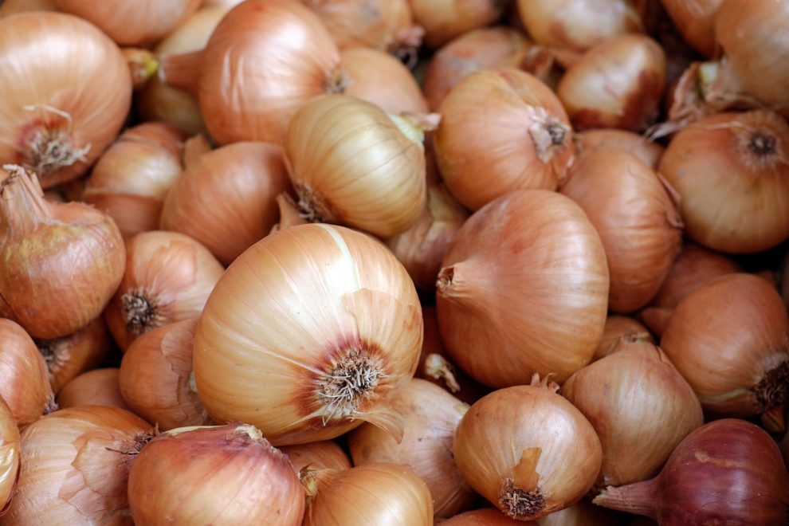

Cette pelouse était le joyau d’Efrei Paris, toujours présente pour accueillir les festivités, elle était devenue l’emblème de l’école. Les étudiants pleurent leur disparition,
ils comptent sur vous pour les aider à la retrouver. Toute aide est la bienvenue. Une cagnotte a été mise en ligne pour permettre de récupérer des fonds pour sa famille afin de
financer de plus amples recherches. Merci pour votre contribution, chaque centime compte !
C'est l'histoire de Rémy, un garçon de 27 ans. Le 26 mai à Marseille, il est arrêté par la police. Il a, sur lui,
quatre sachets de cannabis. Direction l'Evêché. Les policiers lui laissent une chance. Remise en liberté. Quand il ressort du commissariat à 11h,
il grimpe sur son scooter et est repéré quarante minutes plus tard sur le même scooter en train d'acheter à nouveau de la résine à la cité Bassens
(15e), soit cinq pochons, pour un poids total de 22 g.

Elle avait ordonné aux livreurs d’empiler les oignons devant la porte de son appartement et de partir en toute discrétion sans sonner, selon Shandong Net, un média rattaché au gouvernement local.
« J’ai pleuré pendant trois jours, et maintenant c’est à ton tour ! », avait-elle écrit dans une note cinglante accompagnant le chargement surprise La femme a déclaré à Shandong Net que la
relation avait duré un an. Son petit ami a décidé de rompre « de façon unilatérale ». « Ça m’a vraiment fait beaucoup de mal, mais il refusait de pleurer », a-t-elle expliqué. Elle a donc décidé
de lui expédier un cadeau susceptible d’enfin « faire sortir ses larmes ». La réaction de la jeune femme était « excessive », a réagi son ex-amoureux auprès de Shandong Net.
La vengeance a en tout cas laissé des traces dans le voisinage. « Je ne sais pas si son petit copain a pleuré ou pas. Mais je suis choquée !, a déclaré une femme habitant le même immeuble.
Tout le quartier est désormais envahi par l’odeur pestilentielle des oignons en train de pourrir ».